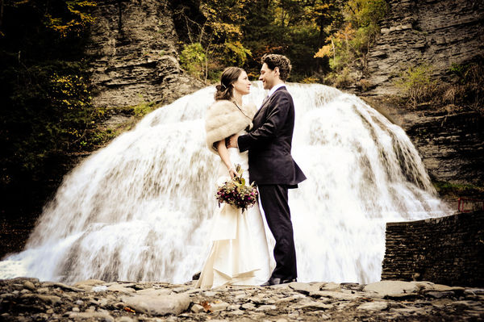
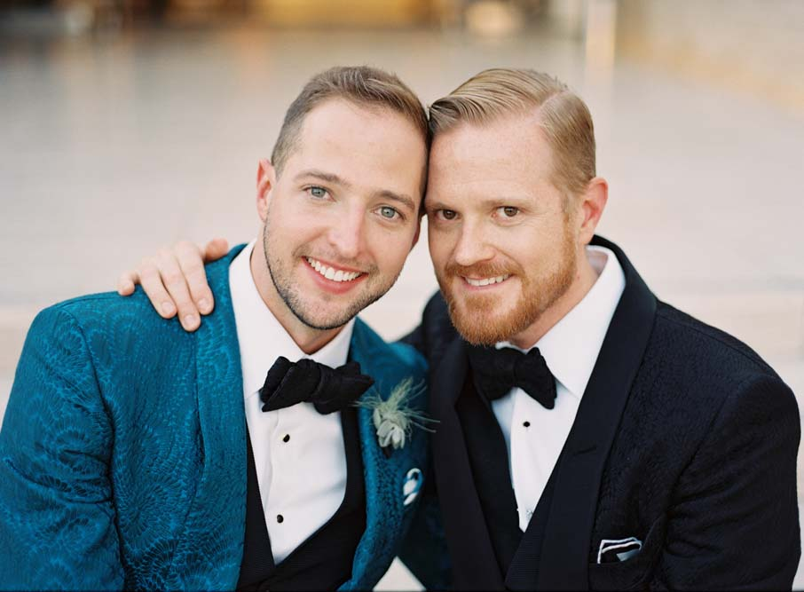
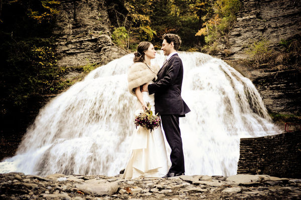
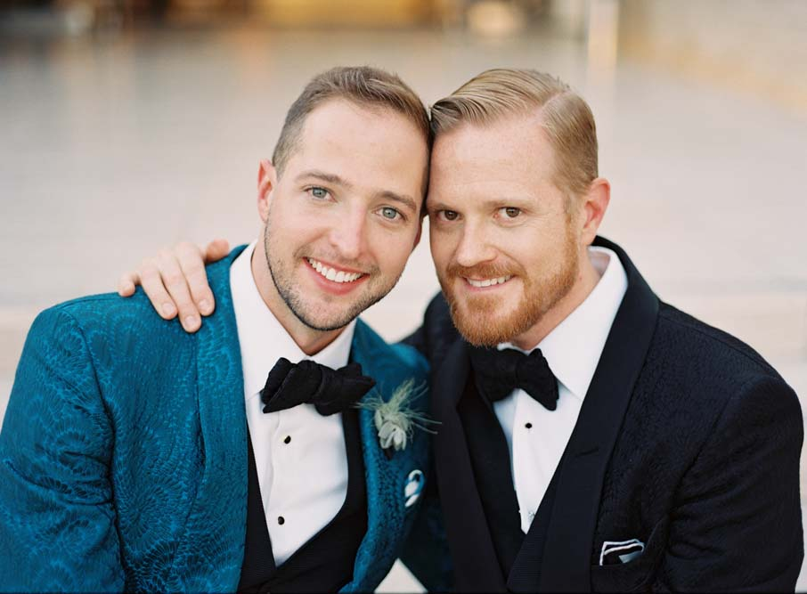

Testimonial
Ashley & Bruce
Daniel is not only passionate about photography, he is also a very gifted young man.
He is able to take any ordinary situations and give them artistic flair.
My wife and I are extremely pleased that he handled every level of the shoot to print process professionally.
Daniel cares about his clients, and we are glad he helped us capturing the happiest moment of our lives.
Lily & Rumen
From the first time we met with Daniel, we were impressed by his knowledge of photography.
He personally handled all the photo-shooting sessions, from our engagement to our wedding.
With Daniel, my wife and I could truly be ourselves, and he was able to bring out our most genuine sides
with his sincerity and positive energy. Our wedding shoot went flawless because of him, and we did not have
to worry a thing! I highly recommend him as he truly is a fabulous photographer!
Daniel & Christophor
Since Daniel and I have the same name, we initially thought it would be very awkward to hire him.
It was so wrong! Daniel was very professional, enthusiastic, creative, and energetic, not to mention, he was also very accepting.
As a gay couple, we had some quite unpleasant experiences with a few photographers.
But Daniel made it all much better! He handled everything perfectly, and his positive energy was able to bring out the best of us.
Daniel was also able to take charge when needed, and then at the same time, not be intrusive.
Simply put, I love this man!
 


